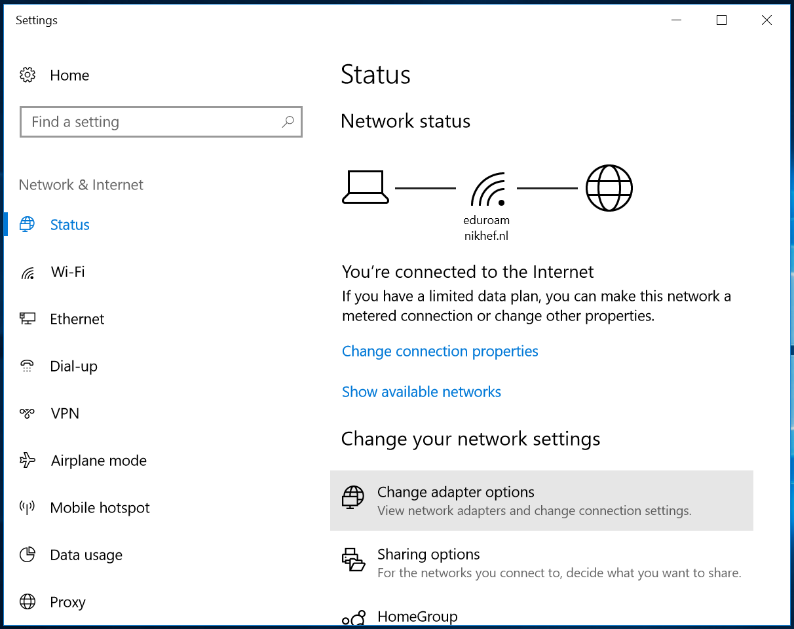
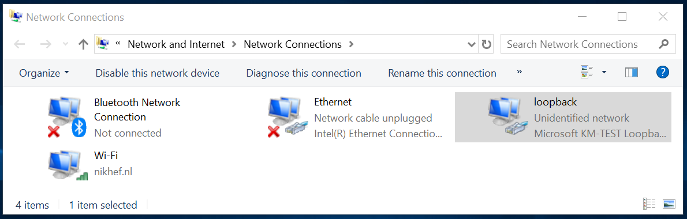
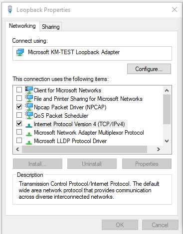
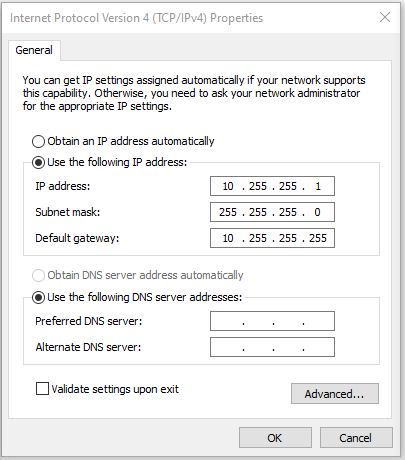
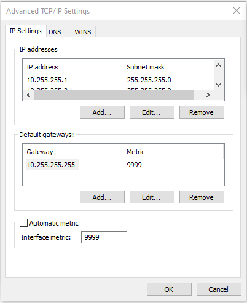

Make sure that
- the entry Client for Microsoft Networks is NOT enabled, i.e. does not have a checkmark in front of it.
- the entry File and Printer sharing for Microsoft Networks is NOT enabled, i.e. does not have a checkmark in front of it.
- the entry Internet Protocol (TCP/IP) is enabled.

Select Use the following IP address and fill in the 'IP address' and 'Subnet mask' as above.
It is not necessary to fill in the 'Default gateway' or a 'DNS server'.

Deselect Automatic metric and fill in the value of 9999 as the 'Interface metric' as shown above.

and select Disable NetBIOS over TCP/IP.